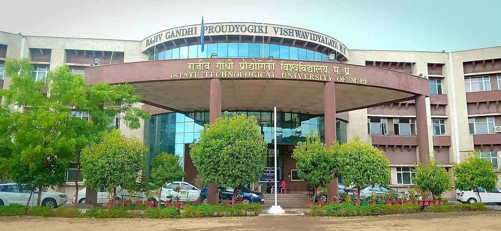
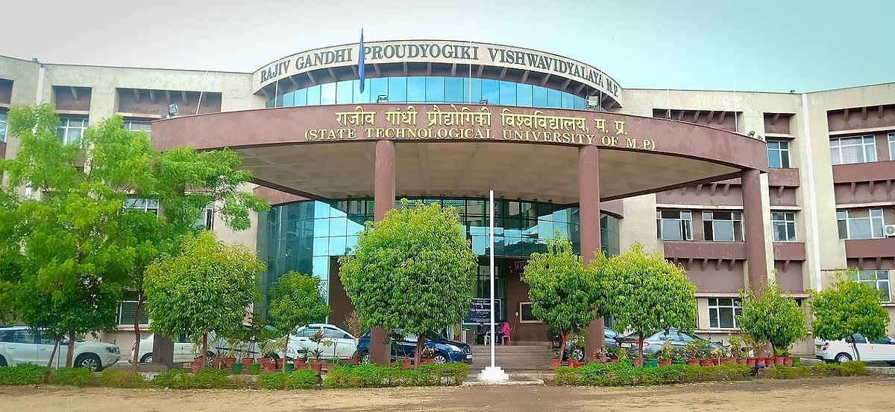

I am a Computer Science Engineering graduate from Bhopal Institute of Technology and Science (RGPV, M.P.), with a Diploma in Computer Science from Government Polytechnic Saharsa. Over the past 2+ years, I have gained valuable experience as a Linux Administrator and IT Support Engineer, managing Ubuntu servers, Samba file sharing, Active Directory, Office 365, VPNs, and providing effective remote and on-site support.
While I have solid experience in IT support and system administration, my passion lies in transitioning towards DevOps, software development, and database management. I have actively developed skills in shell scripting for automation, Java microservices with Spring Boot, and front-end web technologies including HTML, CSS, and JavaScript. Additionally, I am proficient in AWS cloud services, SQL databases, and familiar with DevOps tools such as Git, Docker, and CI/CD pipelines.
I am committed to continuous learning and excited to take on challenges that align with my career aspirations in development and DevOps.


 



RAJIV GANDHI PROUDYOGIKI VISHWAVIDYALAYA, BHOPAL - M.P (2022 – 2025)
STATE BOARD OF TECHNICAL EDUCATION, PATNA - BIHAR (2018 – 2021)
BIHAR SCHOOL EXAMINATION BOARD, PATNA - BIHAR (2017 – 2018)